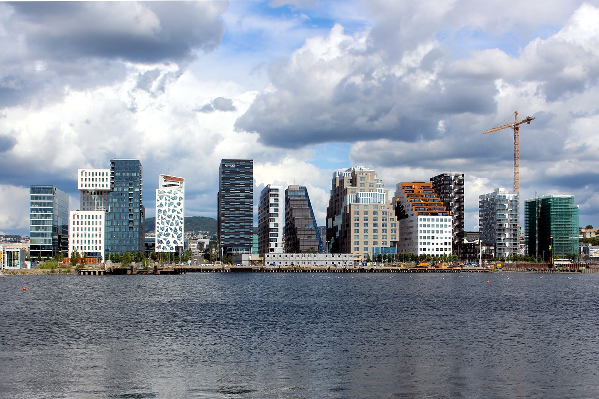
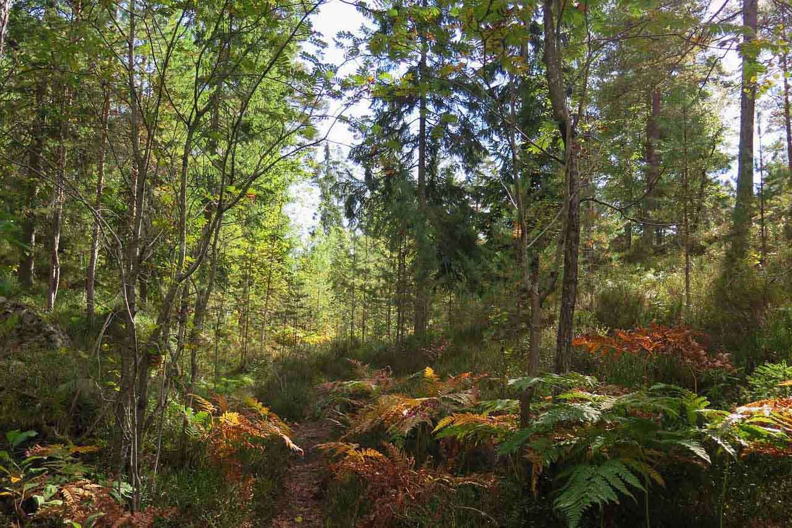
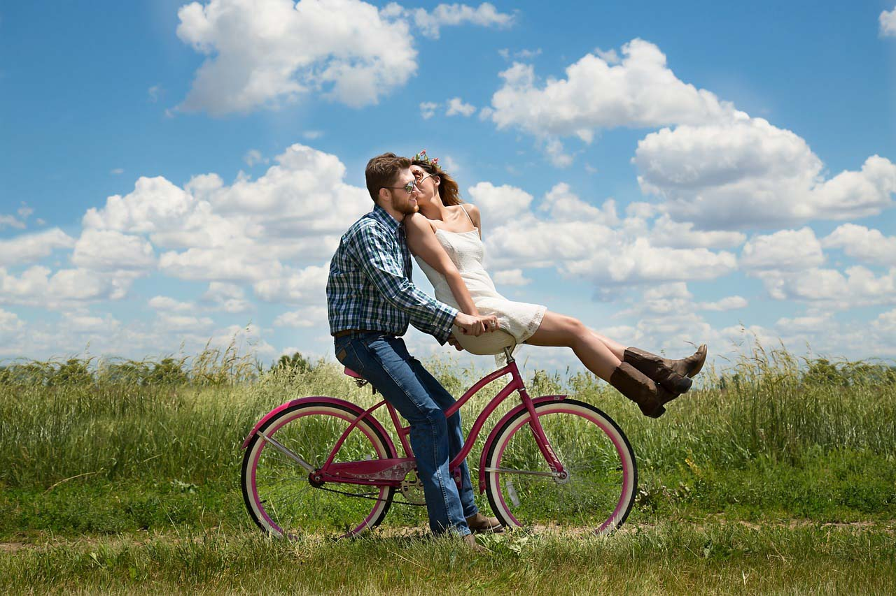

Daily bicycle tours in
OSLO
Re-Cycle can offer you eco-friendly, guided tours in and around Oslo by bike.
Our guided tours are a great way to experience the city from a different perspective.

Inner city tours
Our inner city guided tours is a great way to discover the city of Oslo.

Forest tours
Oslo is gifted with big beautiful forest areas around the whole city. These tours show you the best of Norways nature.

Countryside tours
Want to get away from the city? On these relaxing tours we will take you to the most picturesque and idyllic places Oslo has to offer.